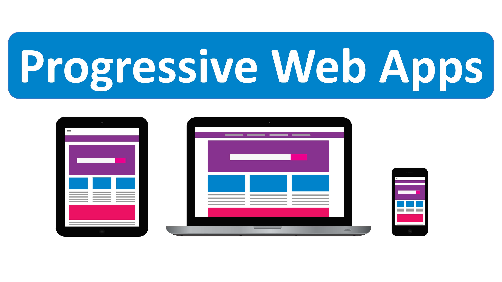
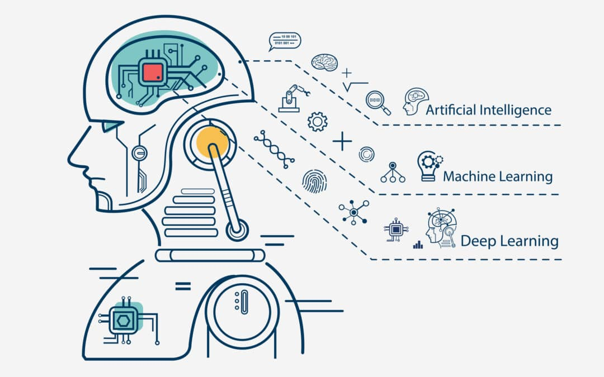
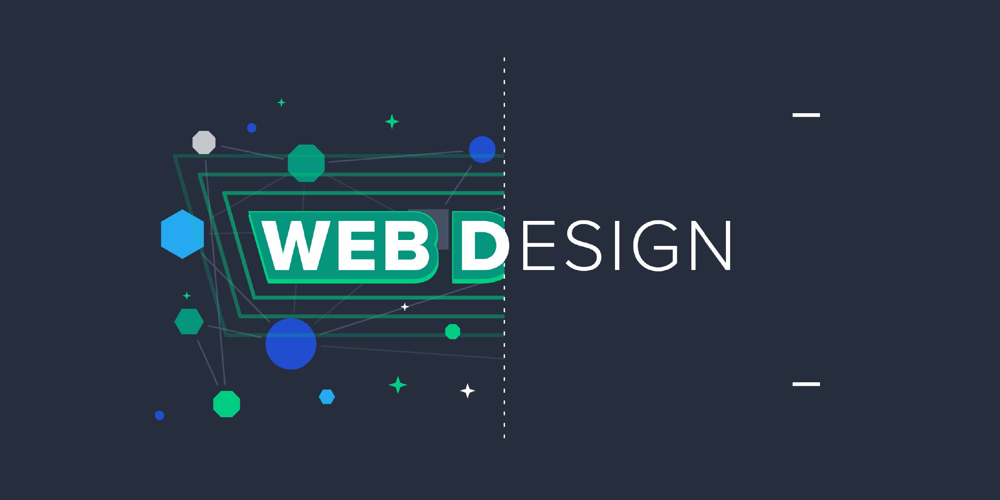
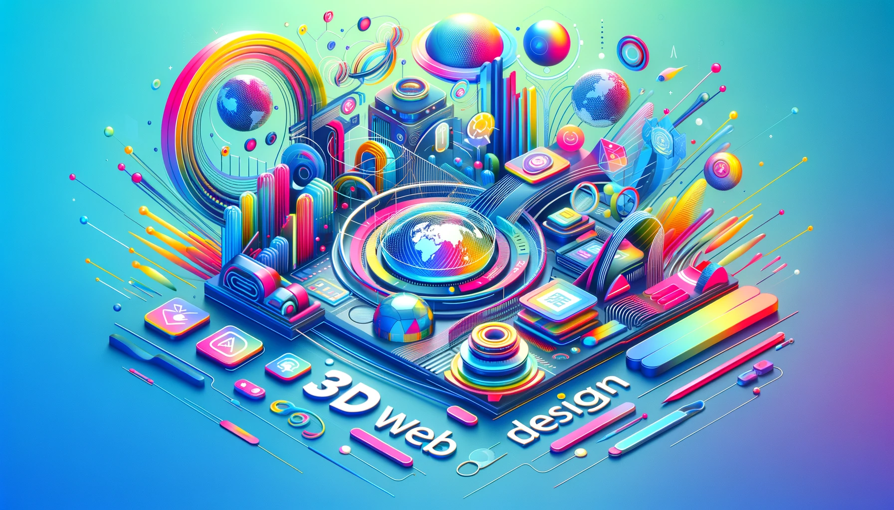

2020
La pandemia de COVID-19 impulsa la importancia de la conectividad digital.
2021
Desarrollo continuo de tecnologías web como WebAssembly y Progressive Web Apps (PWAs).
2022
Avances en inteligencia artificial y machine learning aplicados a la web.
2023
Los sitios web están optando por diseños limpios y simples, con abundante uso de espacios en blanco para enfocar la atención del usuario en los elementos clave. La simplicidad y la elegancia están dominando la escena digital.
2024
El año 2024 traerá consigo una evolución significativa en el diseño web. Desde la personalización impulsada por IA hasta la sostenibilidad, estas tendencias no solo mejorarán la estética de los sitios web, sino que también garantizarán experiencias de usuario más fluidas y atractivas.